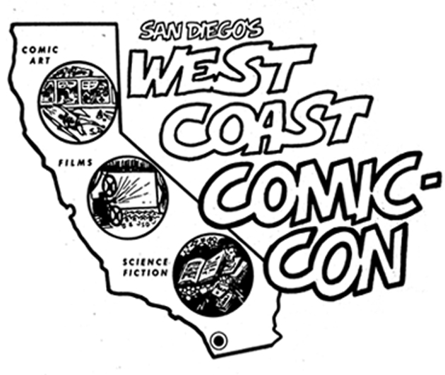
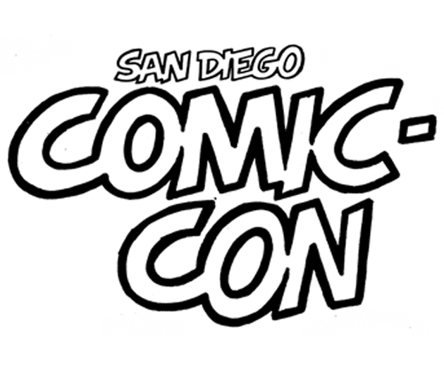
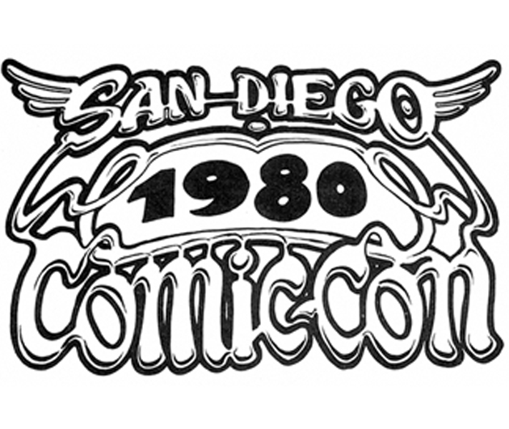
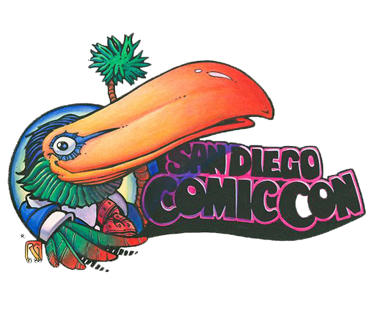
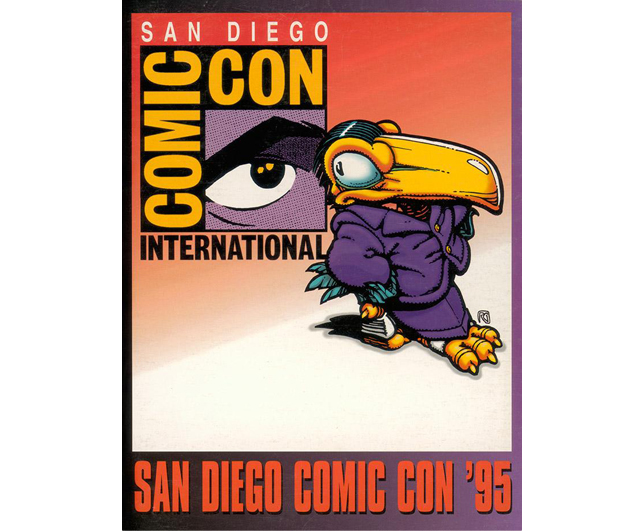
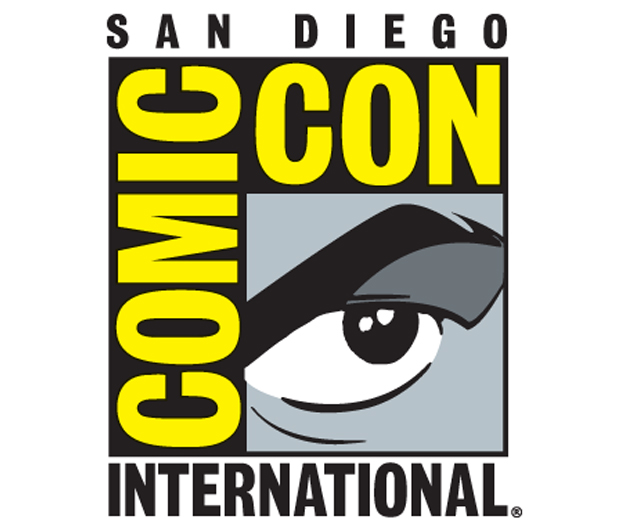

This logo was designed by Shel Dorf for the first year of the event in 1970. It was then called “San Diego's Golden State Comic-Con”.

By 1972, the name had changed to “San Diego's West Coast Comic-Con”. The early logos stress the core coverage of the event – comic art, films and science fiction.

By 1973, the event had settled into being the “San Diego Comic-Con”. While there was no logo until 1980, there was text lettered by Shel Dorf used from 1973 to 1976.

In 1980, this comix-feeling logo was designed by underground cartoonist John Pound and used through 1982.

Rick Geary came up with the Toucan design in early 1980s which became the hallmark of the San Diego Comic-Con for the next decade or so.

In 1995, the event was rebranded as “Comic-Con International: San Diego”, with this new logo designed by Richard Bruning and his associates.

Since 1995, the logo that stresses the growing international appeal of the event has been used until now.